What is it?
Look Alike is an application for the batch mode management of the face recognition un/tagging feature included in the N9 (and N950) MeeGo devices. It provides the user with contact suggestions for the faces recognized in the pictures stored in the device which grow more accurate the more this feature is used. It allows batch mode operations for tagging the suggested contacts or untagging pictures with confirmed contacts on the face areas.
Features:
- "Gallery" grid view of the pictures stored in the device.
- "Contacts" list view of the pictures set belonging to a certain contact.
- "Suggestions" list view of the pictures suggested to belong to a certain contact.
- "Landscape" grid view of the pictures stored in the device without recognized faces.
- Confirming and tagging faces of a certain contact from a set of pictures in batch mode.
- Removing confirmed faces of a certain contact from a set of pictures in batch mode.
- Most of the functionality of the official Gallery application.
Functionality through screenshots:
-
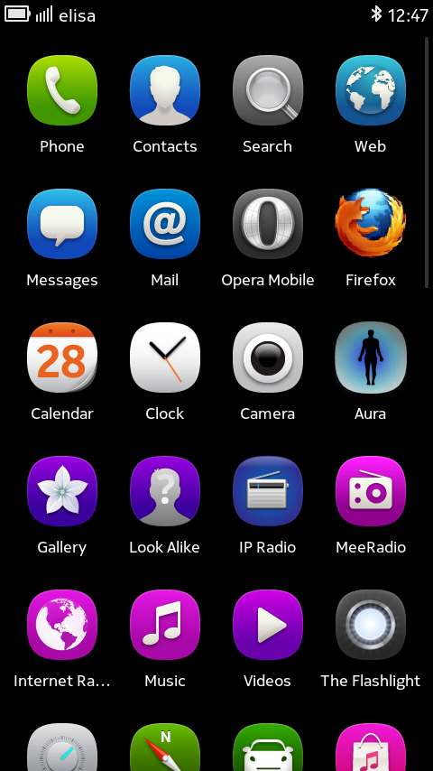
Grid view: Look Alike icon in the Harmattan applications grid
-
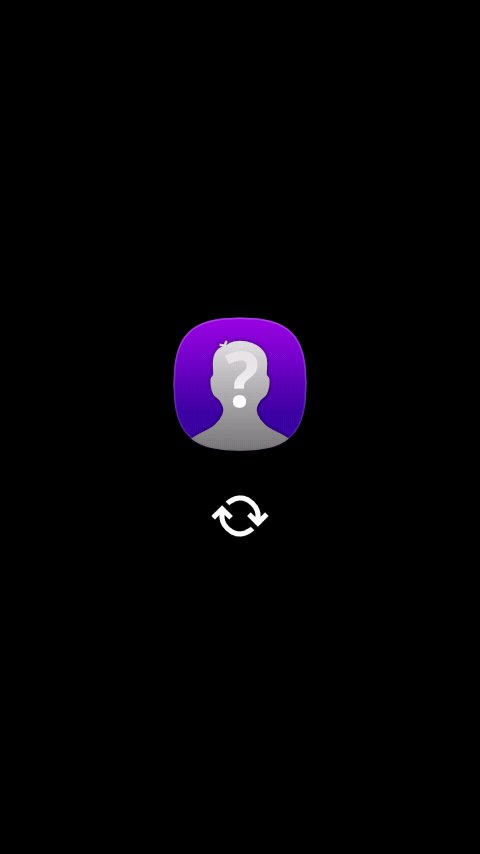
Splash screen: starting, showing a splash screen
-

Gallery view: in the first icon we have the whole set of pictures. This is equivalent to the general view in Gallery, just that it doesn't show any video
-
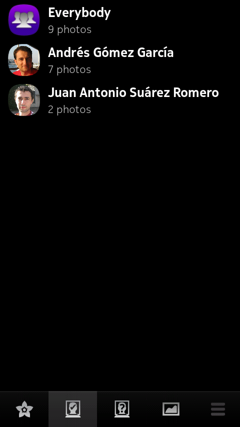
Confirmed faces view: the second icon shows a list of the contacts who have being confirmed in any of the pictures. This view is similar to the contacts view in Gallery, but it also has an icon for all the pictures which have any contact confirmed on them
-
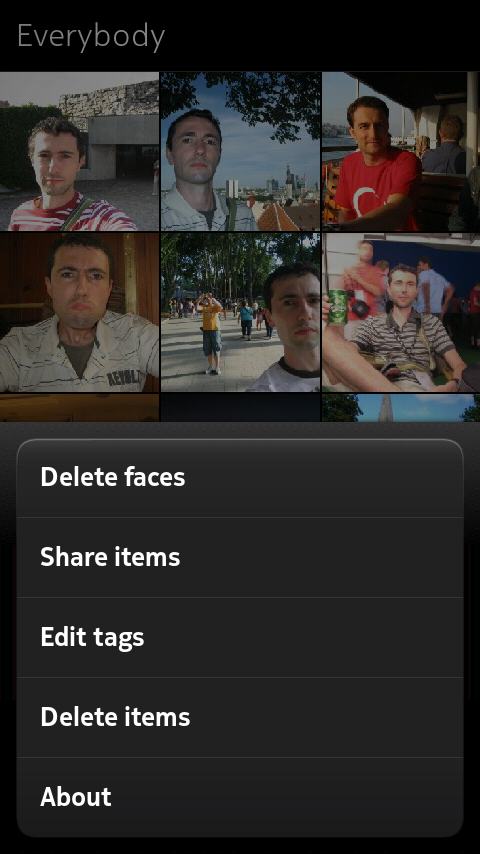
Batch deleting faces option: when entering in one of the items from the confirmed faces view, in this case it is selected "Everybody", from the menu is possible to select an action to delete all those confirmed faces in batch mode
-
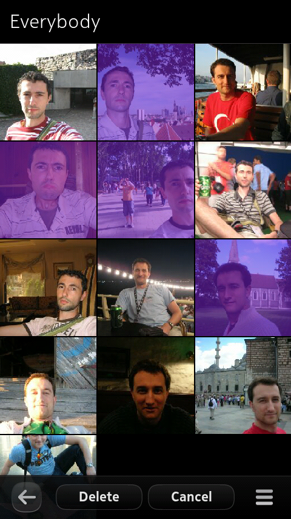
Selecting pictures for batch deletion of confirmed faces: when selecting the action for deleting faces in batch mode, it is possible to select multiple pictures and select to delete all the confirmed faces on them
-
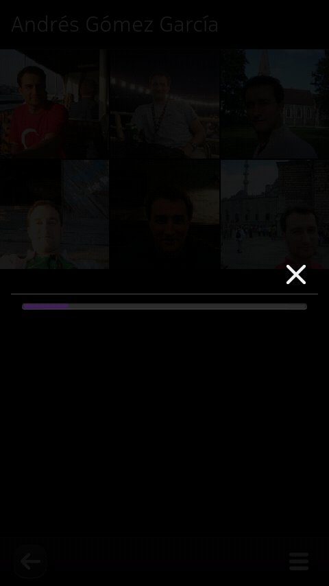
Deleting confirmed faces in batch mode: After selecting to delete the confirmed faces from a set of pictures, we receive feedback from a progress bar
-
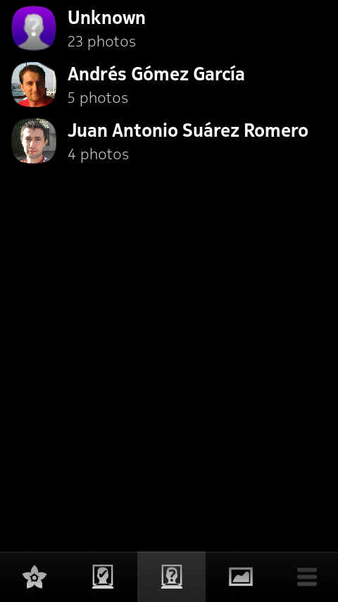
Unconfirmed detected faces view: the third icon shows a list of the contacts who Look Alike thinks there are pictures in which detected faces could belong to them and have yet not being confirmed. In addition, we have an icon for all the pictures which have a detected face but Look Alike is unable to suggest the contact to whom them belong to
-
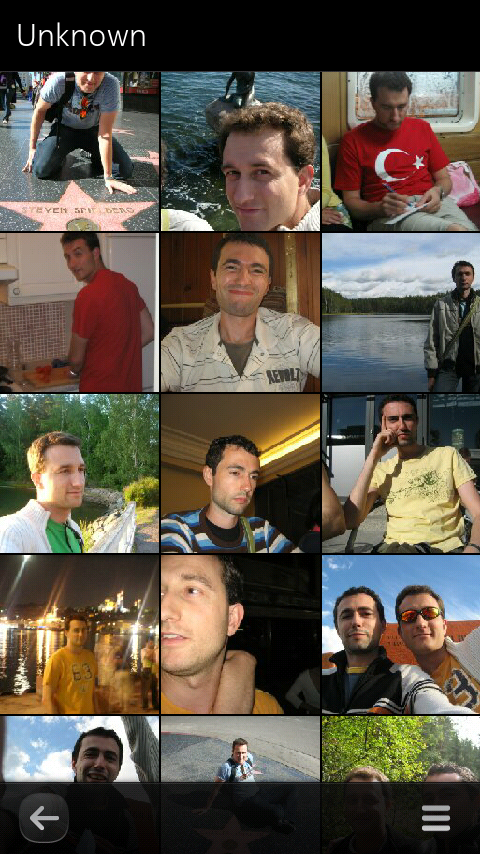
Unknown contact for detected faces view: grid view of the "Unknown" contact: pictures with a detected face but that Look Alike is unable to suggest the contact to whom them belong to
-
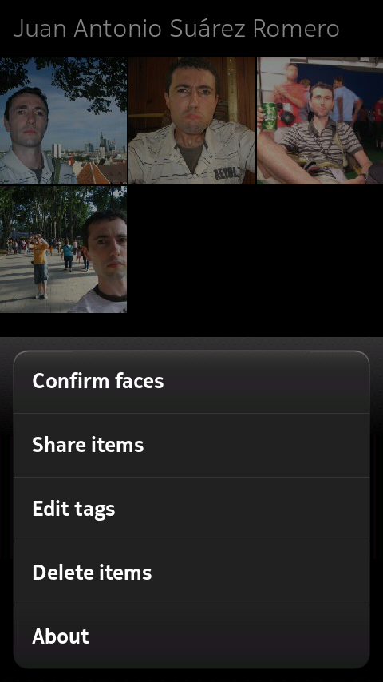
Batch confirming faces option: when entering in one of the items from the unconfirmed detected faces view, from the menu is possible to select an action to confirm all those detected faces that Look Alike suggest belongs to such contact in batch mode
-
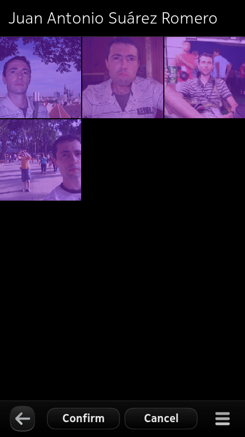
Selecting pictures for batch confirmation of detected faces with suggested contact: when selecting the batch mode action for confirming faces, it is possible to select several pictures and select to confirm all.
-
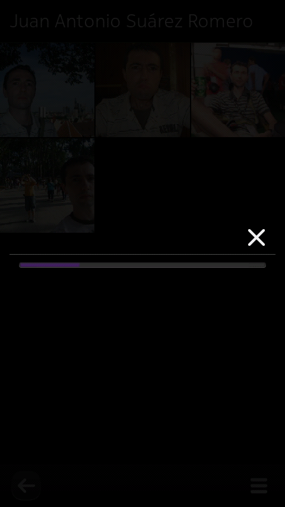
Confirming faces in batch mode: after selecting to confirm the detected faces that Look Alike suggest belongs to a contact from a set of pictures, we receive feedback from a progress bar
-

Landscape view: in the last icon we have the subset of pictures in which Look Alike has been unable to detect any faces. Hence, these should be "landscape" pictures
-
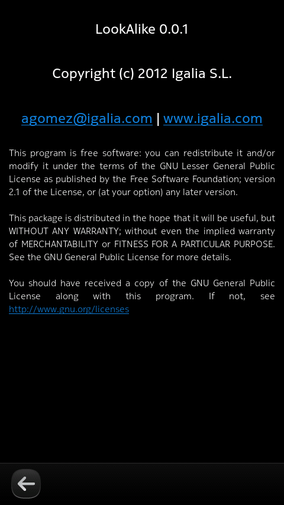
About dialog: about dialog with the contact information and the license
Get support:
Please, feel free to report any issues you might find in our bug tracker. If you prefer, you can also send me an email to agomez at igalia.
Known issues:
- Only PR >= 1.3 is currently supported.
- Issue #1: When a new picture with a face is added to the device, Look Alike doesn't recognize nor suggest any face automatically; the picture must be opened in fullscreen first. Only after that, Look Alike will suggest contacts for the found faces.